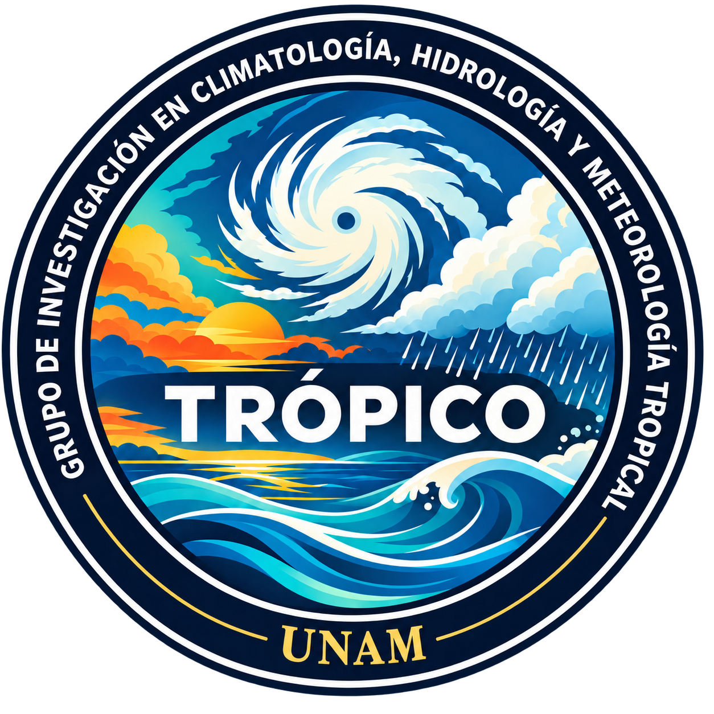
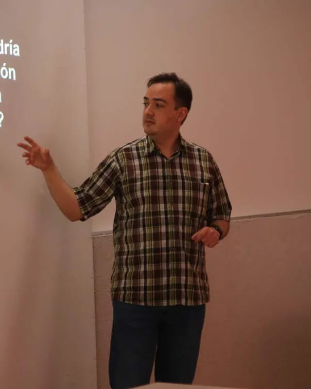
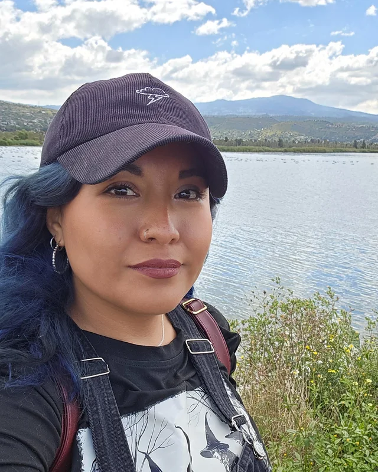
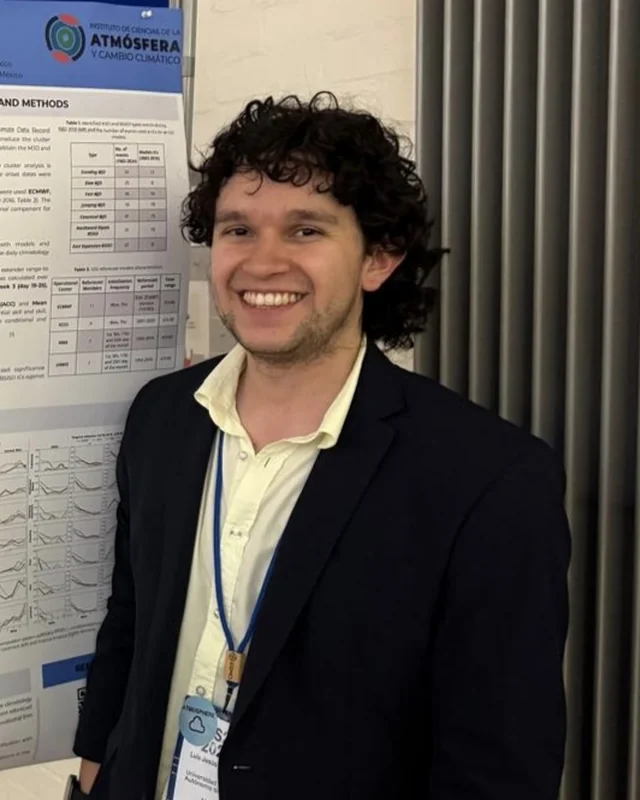
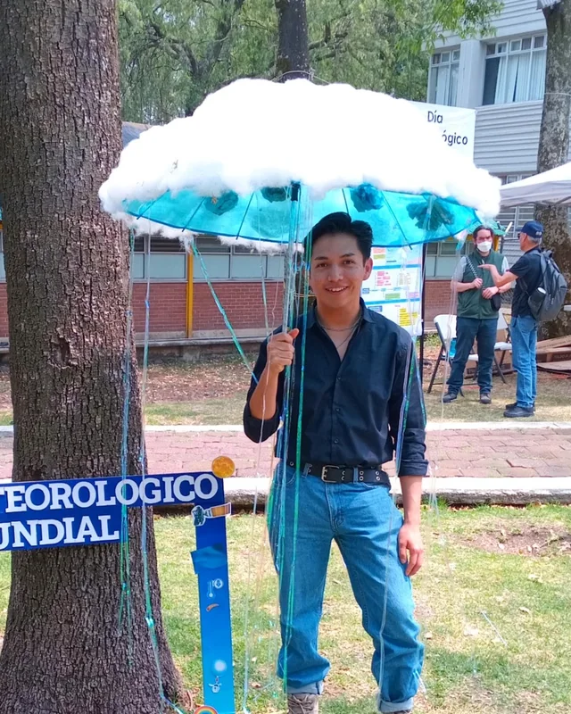

Dinámica atmosférica tropical
Circulación atmosférica, convección organizada y ondas tropicales.

TRÓPICOCIENCIAS DE LA ATMÓSFERA TROPICAL
Grupo de Investigación en Climatología, Hidrología y Meteorología Tropical
Conoce nuestras investigacionesQUIÉNES SOMOS
Estudiamos los procesos físicos que rigen el tiempo atmosférico, el clima y el ciclo del agua en los trópicos.
TRÓPICO es un grupo de investigación dedicado a ampliar nuestro conocimiento de los procesos atmosféricos, climáticos e hidrológicos del trópico.
Investigamos los mecanismos físicos que gobiernan el tiempo atmosférico y el clima tropical, su variabilidad en distintas escalas espaciales y temporales, y sus implicaciones para los fenómenos meteorológicos extremos y las amenazas hidrometeorológicas.
Promovemos la investigación científica, la colaboración académica, la formación de estudiantes y la divulgación de las ciencias atmosféricas y del clima tropical.
QUÉ ESTUDIAMOS
Nuestras investigaciones integran la dinámica atmosférica, la variabilidad climática, la hidrología y los procesos meteorológicos tropicales.
Circulación atmosférica, convección organizada y ondas tropicales.
Variabilidad climática, cambio climático y dinámica del clima tropical.
Precipitación, transporte atmosférico de humedad y variabilidad hidrológica.
Ciclones tropicales, sistemas convectivos de mesoescala y fenómenos meteorológicos extremos.
Precipitación extrema, sequías, olas de calor, rayos y riesgos asociados al tiempo atmosférico.
DESCUBRE NUESTRAS HERRAMIENTAS CIENTÍFICAS
La exploración científica va más allá de las publicaciones. Descubre las herramientas interactivas desarrolladas por investigadores de TRÓPICO para visualizar las condiciones atmosféricas, la precipitación tropical y la variabilidad climática.
EXPLORACIÓN A ESCALA GLOBAL
Observa la atmósfera desde una nueva perspectiva. Explora las anomalías atmosféricas globales diarias en un globo 3D interactivo, con múltiples variables y visualizaciones del viento.
Explorar el globoTIEMPO ATMOSFÉRICO Y CLIMA TROPICAL
Sigue el pulso del trópico. Explora la precipitación estimada por satélite, la temperatura superficial del mar, indicadores de convección y pronósticos de precipitación para el trópico y las Américas.
Visitar el observatorioIlustraciones conceptuales · Visita las plataformas para consultar los productos científicos más recientes y sus fechas de observación.
NUESTRA COMUNIDAD
Conoce a las investigadoras, investigadores, estudiantes y colaboradores que forman parte de TRÓPICO.




OPORTUNIDADES DE INVESTIGACIÓN Y FORMACIÓN
¿Te interesa desarrollar un proyecto de investigación, una tesis o una colaboración científica?
Nos interesa conocer a estudiantes e investigadores que quieran trabajar en ciencias atmosféricas tropicales, climatología, hidrología y meteorología. Nuestros investigadores principales comparten diversos intereses científicos y, al mismo tiempo, desarrollan preguntas y enfoques de investigación propios. Explora las áreas del grupo y contacta al investigador cuyos intereses se acerquen más a los tuyos.
Al escribirnos, preséntate brevemente y cuéntanos sobre tus intereses de investigación o ideas de tesis. Puedes dirigirte al investigador cuya línea de trabajo se relacione mejor con tus objetivos.
SIGUE A TRÓPICO
Redes sociales
Síguenos en nuestras redes sociales y conoce las actividades de nuestra comunidad científica.